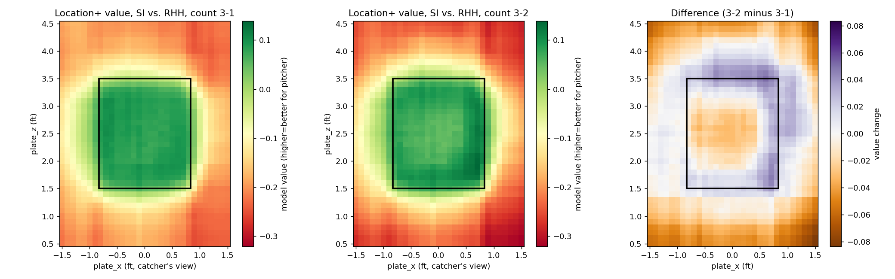

v1. Measures where a pitch ended up and how valuable that location was, given the count - nothing about the pitch's physical shape (that's Stuff+), delivery (Deception+), or relationship to other pitches in the arsenal (Tunneling+). Follows FanGraphs' own public Location+ methodology: location, pitch type, and count only. One deliberate deviation - batter handedness (stand) is kept in, not excluded as FanGraphs does, since a pitch's location value is genuinely relative to which side of the plate the batter stands on (see the ablation check below for whether that choice actually earns its keep). Known limitation, accepted rather than worked around: Statcast only captures where a pitch actually crossed, not catcher target or pitcher intent, so this measures location-value-achieved, which conflates real command with outcome luck - FanGraphs' own public writeup states they tested intent-based data for this exact purpose and found it added no predictive value over real-location data alone.
The central claim of this model: the same physical location is worth a different amount depending on the count. Sinker vs. right-handed batters, 3-1 vs. 3-2 - the strike zone's overall shape should look similar (it doesn't move between counts), but the model should show a real, location-specific interaction on top of that, not just a flat rescale.

FanGraphs' public Location+ excludes batter handedness entirely. This build keeps it - direct ablation, same CV scheme, only `stand` changes: